AI 코딩의 네 단계와 '프런티어 개발'
발표자는 AWS 시니어 프린시펄 엔지니어로, 에이전트형 코딩 도구 Kiro를 만들고 있어요. 첫 슬라이드는 AI 코딩 도구가 지나온 네 단계를 왼쪽부터 늘어놓아요. 한 줄 자동완성(Inline code completion), 코드에 대해 묻는 채팅, 바이브 코딩, 그리고 프런티어 개발이에요.
아래 괄호 두 개를 보면 숫자가 갈려요. 앞의 세 단계 아래에는 발표자가 체감한 '10~20% 향상'이 붙어 있었어요. 마지막 프런티어 개발 아래에는 사내 파일럿 결과인 '중앙값 4.5배, 일부 팀은 10배 이상'이 붙어 있어요.
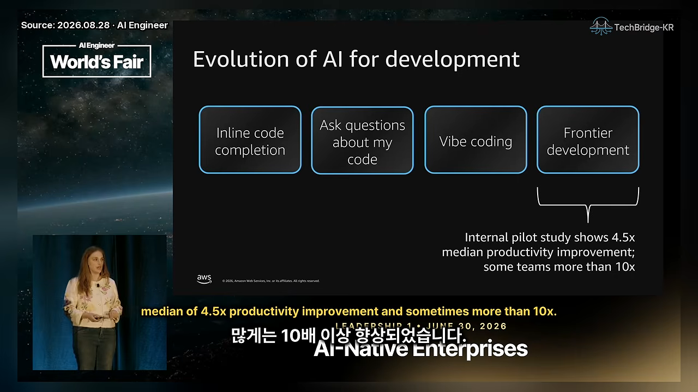
프런티어 개발자는 어떻게 일할까요
발표자는 프런티어 개발자를 행동 세 가지로 정의해요. 슬라이드 왼쪽 번호 목록이 그 세 가지예요.
- 손을 떼고 코딩해요. 직접 쓰는 코드는 전체의 1~2%뿐이고 나머지는 에이전트가 써요.
- 에이전트와 드물게 대화해요. 코딩 도구가 사람 개입 없이 몇 시간씩 혼자 돌게 만드는 게 목표예요.
- 노는 시간을 줄여요. 여러 에이전트를 나란히 돌려서 밀린 작업을 계속 처리해요.
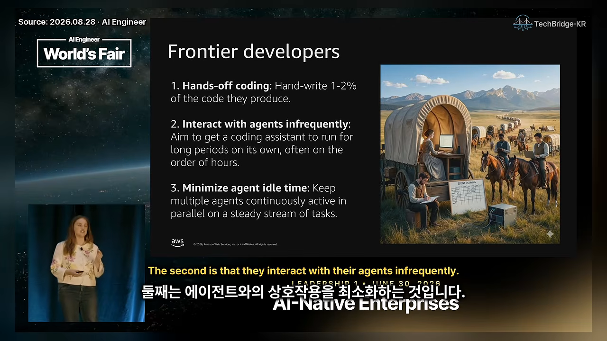
세 번의 실험: 가능은 한데, 누구나 될까요?
프런티어 개발 팀을 처음 본 건 Amazon Bedrock 팀에서였어요. Bedrock은 Claude나 GPT(Generative Pre-trained Transformer) 같은 LLM(Large Language Model)을 올려 주는 모델 호스팅 서비스예요. 이 팀은 새 추론 데이터 플레인을 만들어야 했고, 처음엔 30명이 18개월 걸린다고 봤어요. 새 시스템을 짓고, 고객과 모델을 옮기는 큰 일이었거든요.
슬라이드의 세 숫자가 결과예요. 왼쪽 86%는 18개월 예상을 76일로 줄인 것, 가운데 80%는 30명 예상을 6명으로 줄인 것, 오른쪽 20배는 주당 커밋이 2개에서 40개로 늘어난 것이에요.
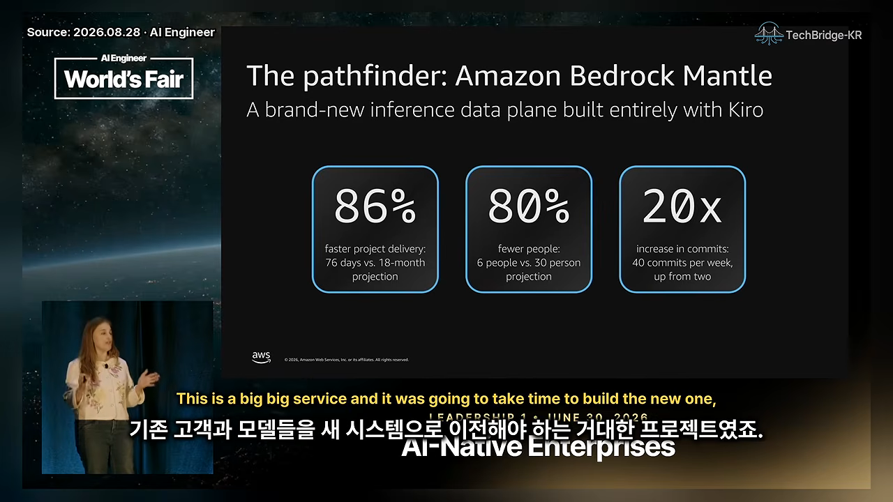
그런데 다음 슬라이드가 조건을 달아요. '단 6명'에 별표가 붙어 있고, 그 6명이 디스팅귀시드 엔지니어 2명, 시니어 프린시펄 1명, 프린시펄 3명이라고 적혀 있어요. 분산 시스템과 LLM 구조의 전문가들이었죠. 이야기는 사내에 빠르게 퍼졌지만, 다른 팀은 "우리도 될까?"라는 의문을 품었어요.
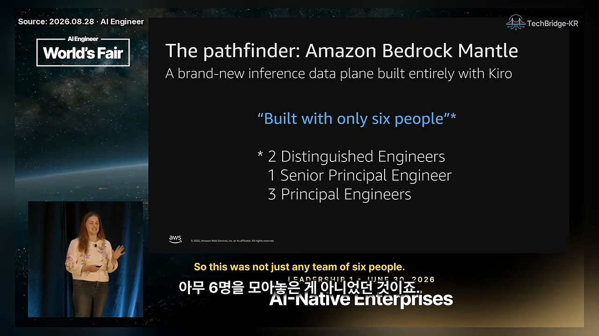
두 번째 실험: 10일 스프린트
Prime Video 재무 시스템 조직은 엔지니어 6명을 한방에 모아 10일 동안 Kiro를 마음껏 쓰게 했어요. 슬라이드 왼쪽 73%는 90주로 잡혔던 일정을 24주로 줄인 것, 오른쪽 5.8배는 평소 기준 96개였던 커밋이 556개가 된 것이에요.
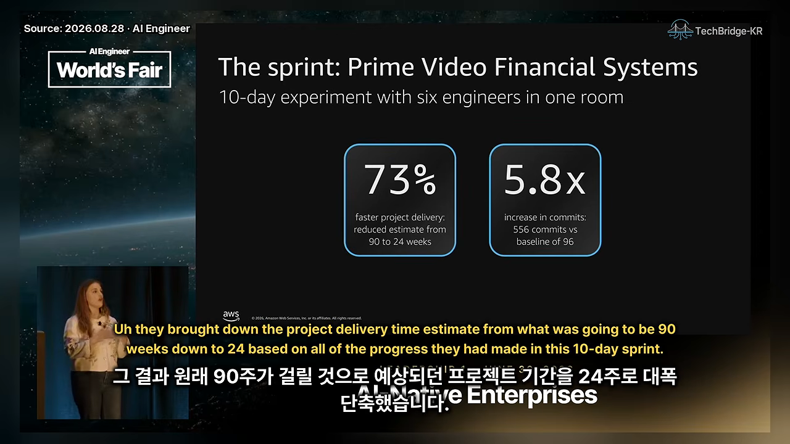
이번에도 별표가 붙어요. 온콜 당번이 없었고, 회의도 적었어요. 게다가 시니어 엔지니어 한 명이 앞선 3주 동안 요구사항이 자세한 작은 작업들을 미리 만들어 뒀어요. 발표자도 이건 평소 업무가 아니라 특정 시점의 구조화된 스프린트였다고 인정해요.
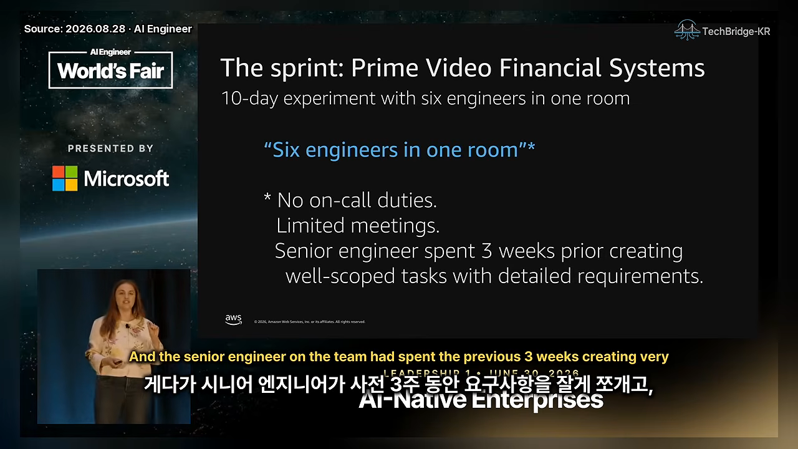
두 실험을 나란히 놓으면 이래요. 둘 다 가능성은 보여 줬지만, 평범한 팀의 평범한 업무와는 거리가 있었어요.
| Bedrock Mantle (패스파인더) | Prime Video (스프린트) | |
|---|---|---|
| 인원 | 6명 (예상 30명) | 6명 |
| 기간 | 76일 (예상 18개월) | 10일 스프린트, 전체 일정 90주 → 24주 |
| 커밋 | 주당 2개 → 40개 (20배) | 96개 → 556개 (5.8배) |
| 작업 성격 | 새로 짓는 시스템 | 미리 잘게 쪼갠 작업 |
| 따라 하기 어려운 이유 | 사내 최상위 엔지니어들 | 온콜·회의 없음, 3주 사전 준비 |
평범한 50개 팀에서 갈린 것
그래서 Amazon Stores(amazon.com과 리테일 사이트, 오프라인 매장을 아우르는 조직)는 더 현실적인 파일럿을 했어요. 신입부터 시니어까지 경력 분포가 평범하고, 새로 짓는 시스템이 아니라 기존 코드베이스를 다루는 브라운필드 50개 팀을 2025년 대부분 동안 지켜봤어요.
슬라이드 아래쪽 한 줄이 측정 기준이에요. 생산성은 커밋 수가 아니라 '프로덕션 배포 속도', 곧 고객에게 변경이 얼마나 빨리 나가느냐로 쟀어요. 그 위의 두 상자가 결과예요. 왼쪽 25개 팀은 3배 미만, 오른쪽 25개 팀은 중앙값 4.5배였어요.
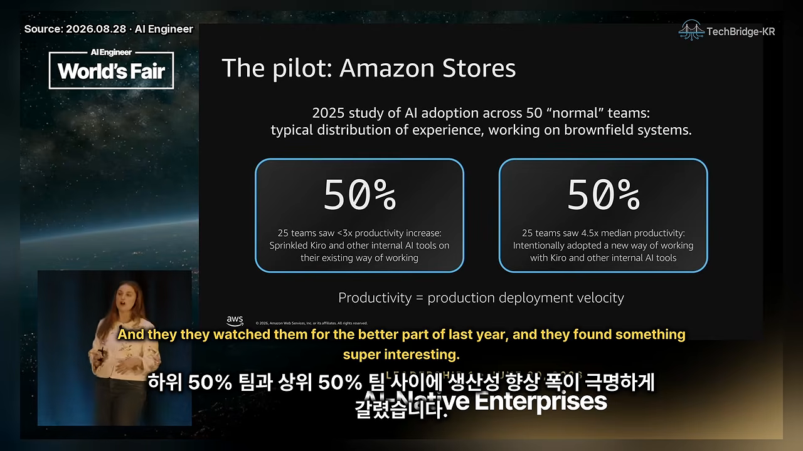
팀의 90%가 Kiro를 포함한 같은 사내 도구를 썼어요. 그러니 차이는 도구가 아니라 일하는 방식에서 났어요. 발표자는 이게 자신에게 가장 큰 깨달음이었다고 해요. 자기가 그동안 AI로 큰 차이를 못 느낀 이유도 일하는 방식을 바꾸지 않아서였다는 거죠.
It wasn't about the tools, it was about the way that they worked.
도구의 문제가 아니라 일하는 방식의 문제였어요.
— 영상 06:45
다섯 가지 습관
파일럿 팀과 앞의 두 실험 팀을 인터뷰해서 다섯 가지 공통점을 뽑았어요. 발표자는 일부러 '습관'이라는 말을 써요. 한 번의 스프린트가 아니라 매일 해야 하는 일이고, 몸에 붙이는 데 시간이 걸리기 때문이에요.
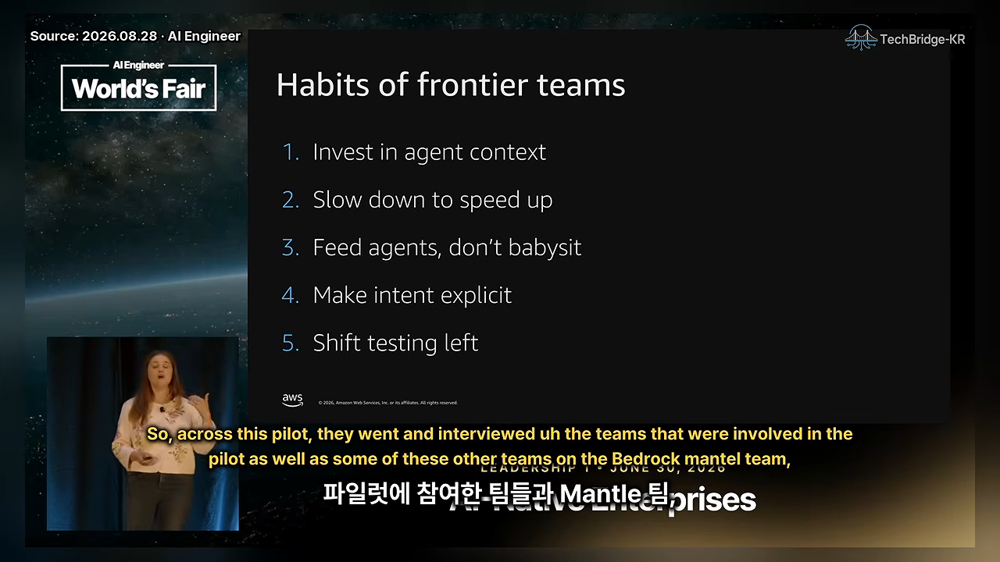
습관 1. 에이전트 컨텍스트에 투자하기
우리 머릿속에는 팀만 아는 지식이 많아요. 보통은 슬랙 대화, 온보딩 멘토, 코드 리뷰, 스탠드업과 스프린트 계획으로 사람에게 전하죠. 에이전트는 이 자리에 없으니, 잘된 팀들은 이걸 전부 글로 적어야 했어요.
슬라이드는 이 습관을 두 개의 질문으로 줄여 놨어요. 위쪽은 에이전트가 실수할 때마다, 아래쪽은 새 모델이 나올 때마다 던지는 질문이에요.
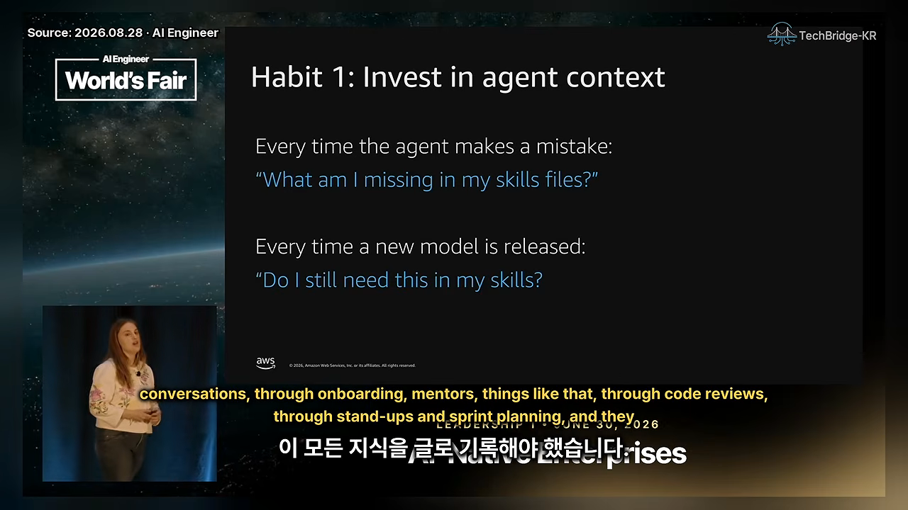
채우기: 실수할 때마다 무엇이 빠졌나요
에이전트가 틀리거나 내가 했을 방식과 다르게 하면, 탓하기 전에 스킬 파일이나 스티어링 파일에 무엇이 빠졌는지 봐요. 그 지식을 적어 두면 다음부터는 같은 실수를 안 해요.
덜어 내기: 이 규칙이 아직 필요할까요
모델은 1년 사이 크게 좋아졌어요. 발표자 말로는 Sonnet 3.7 시절엔 버릇이 많아서 스티어링 파일에 '하지 마' 규칙을 잔뜩 넣어야 했어요. Opus 4.5 이후에는 그럴 일이 훨씬 줄었고, 그 뒤로도 새 모델이 계속 나왔죠. 그래서 새 모델이 나올 때마다 각 규칙이 아직 필요한지, 아니면 컨텍스트만 부풀리는지 다시 봐야 해요.
습관 2·3. 먼저 느려지고, 먹이를 주세요
두 번째 습관은 처음엔 이상하게 들려요. 인터뷰한 거의 모든 팀이 새 방식을 받아들이는 동안 생산성이 오히려 떨어졌다고 했어요. 하키스틱처럼 꺾여 올라가는 곡선을 보려면, 그 전에 의도적인 엔지니어링 작업을 먼저 해야 하기 때문이에요. 특히 오래된 코드베이스일수록 그래요.
슬라이드의 체크리스트가 그 '먼저 하는 일'이에요. 위에서부터 차례로 볼게요.
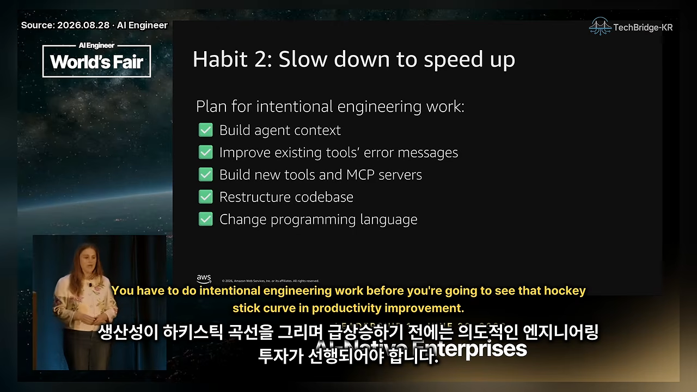
- 에이전트 컨텍스트 쌓기 — 습관 1 그대로예요.
- 기존 도구의 에러 메시지 다듬기 — 실패했을 때 모델이 무슨 일인지 알 수 있게요.
- 새 도구와 MCP(Model Context Protocol) 서버 만들기 — 모델이 필요한 일을 실제로 해낼 수 있게요.
- 코드베이스 재구성 — 에이전트가 길을 더 쉽게 찾게요.
- 프로그래밍 언어 바꾸기 — 타입이 없는 Python이나 JavaScript는 테스트하기 어렵고 컴파일 에러도 없어서, 모델이 짐작으로 코드를 돌려줘요. 그래서 TypeScript로 옮기는 팀이 있고, 아마존 안에서는 에러 메시지가 친절한 Rust가 인기라고 해요.
습관 3. 돌보지 말고 먹이를 주세요
발표자가 생산성이 계단처럼 뛴 이유를 가장 잘 설명한다고 꼽은 습관이에요. 에이전트와 하루 종일 주고받으면 사람이 내내 루프 안에 있어요. 코드가 나올 때까지 30초에서 1분씩 기다리니 다른 일을 못 하고, 에이전트를 여러 개 돌리기도 어려워요. 그러면 4~5배 향상은 나올 수가 없죠.
슬라이드의 두 상자가 같은 일을 두 방식으로 시킨 예예요. 왼쪽 '돌보기'는 "이 API에 인가 추가해", "테스트 추가해", "테스트가 실패해", "아직도 실패해", "커버리지가 부족해"… 하고 일곱 번을 주고받아요. 오른쪽 '먹이 주기'는 한 번에 할 일과 검증 방법을 같이 줘요. 단위 테스트를 돌려 통과시키고, 새 코드 커버리지 90%를 채우고, 통합 테스트로 인가를 확인하라고요.
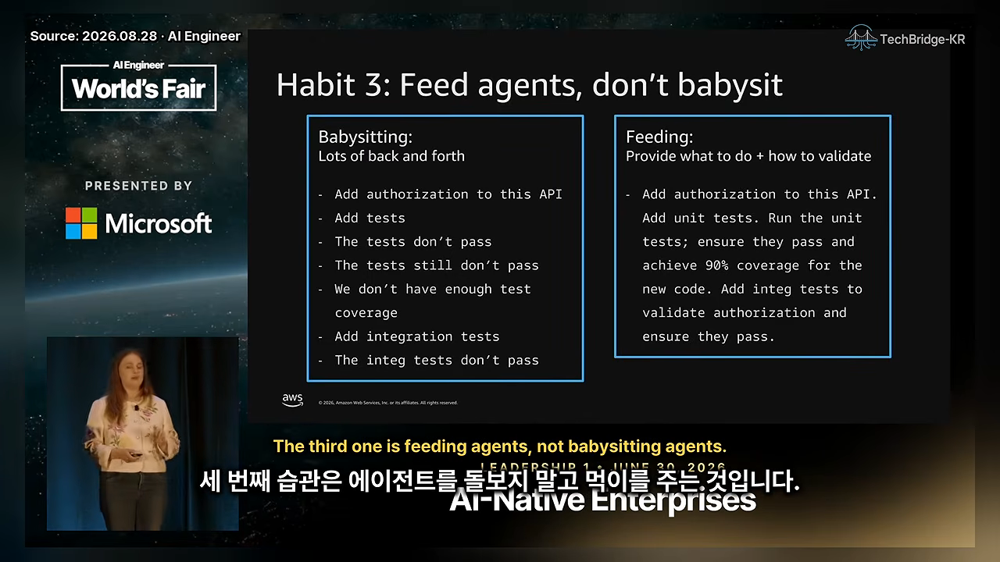
핵심은 에이전트가 스스로 검증하게 만드는 거예요. 컴파일되고, 테스트를 통과하고, 커버리지가 높을 때만 사람에게 돌아오게 하는 거죠. 한 단계 더 나가면 이 검증 기준을 스티어링 파일에 넣어서, 매번 말하지 않아도 늘 그렇게 하게 만들어요.
습관 4·5. 의도는 문서로, 테스트는 앞으로
아마존은 원래 스펙 주도 개발을 많이 하고, 이 방식을 Kiro에 넣어 뒀어요. 그래서 아마존 엔지니어들에게는 자연스러운 습관이에요.
발표자가 본 바이브 코딩은 이래요. 아주 추상적인 프롬프트를 주고, 에이전트가 코드를 잔뜩 만들게 한 뒤, "그런 뜻이 아니었어", "요구사항을 잘못 잡았어", "그렇게 만들려던 게 아니야, 기술 설계는 이거야" 하고 오가요. 의도 자체가 틀렸는데 코드를 두고 반복하는 건 효율이 떨어져요.
슬라이드의 템플릿이 대안이에요. 기능 명세(Feature Specification) 아래에 목표, 사용 사례, 핵심 기능, 기술 요구사항과 설계 네 칸을 먼저 채워요.
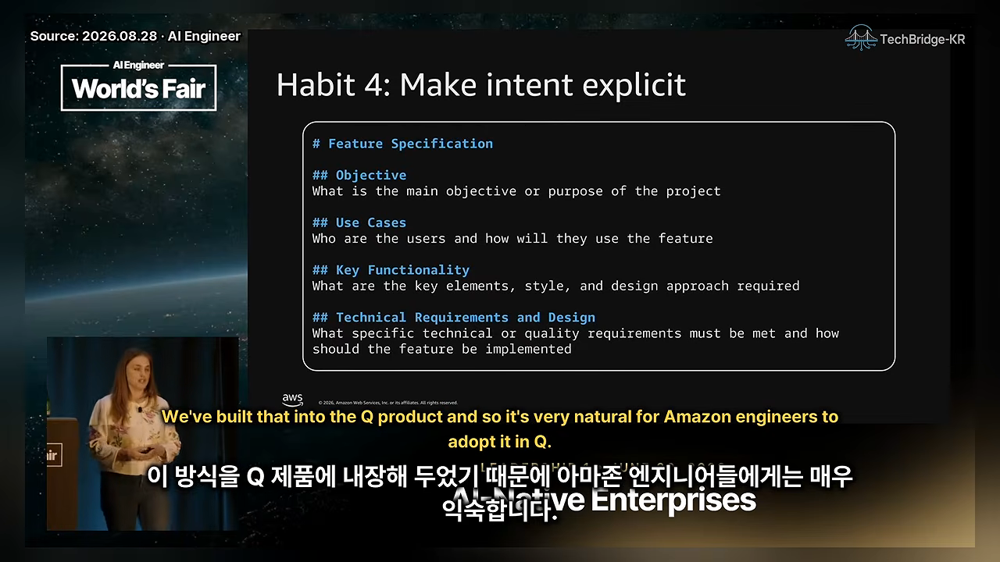
모호하고 복잡한 기능일수록 아마존 엔지니어들은 이 명세부터 써요. 명세를 처음부터 다 쓸 필요는 없어요. Kiro에서는 모델이 초안을 만들어 줘요. 중요한 건 대화의 대상이 바뀐다는 점이에요. 코드베이스 여기저기 흩어진 변경을 두고 오가는 것보다 문서 하나를 두고 모델과 다듬는 게 훨씬 쉬워요.
습관 5. 테스트를 앞으로 당기세요
슬라이드 제목은 Shift testing left, 곧 시프트 레프트예요. 에이전트가 몇 시간씩 혼자 일하려면 빠른 피드백 루프가 필요해요. 에이전트는 실수하기 마련이고, 그건 괜찮아요. 올바른 신호만 받으면 스스로 고치면서 오래 일할 수 있거든요.
슬라이드 제목 아래 문구가 '빠르고 로컬에서 도는 피드백 루프를 주라'예요. 그 아래 여섯 항목이 그 루프를 이루는 장치예요. 린터, 목 서비스, 단위 테스트, 통합 테스트, 성능 테스트, 보안 테스트예요.
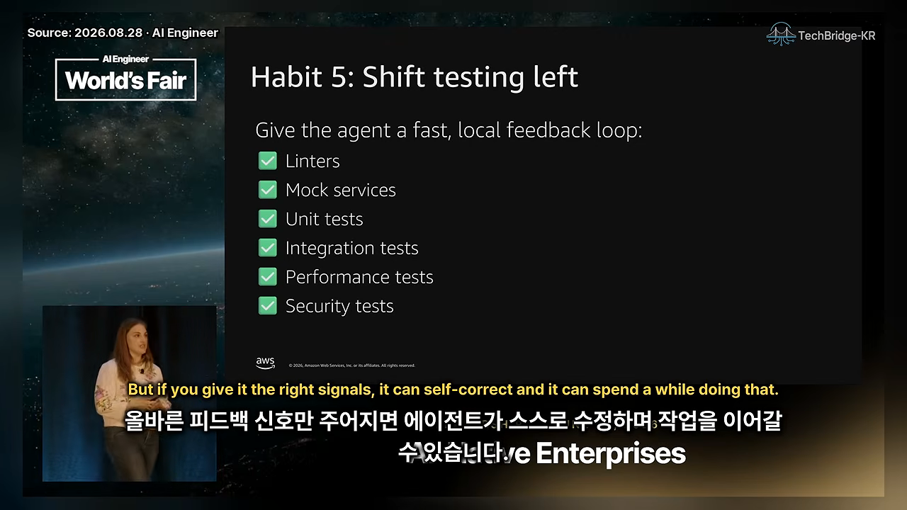
두 번째 항목인 목 서비스를 특히 많이 쓴대요. 예전 통합 테스트는 실제 서비스까지 엮어 끝에서 끝까지 확인했어요. 지금은 로컬에서만 돌고 늘 같은 응답을 주는 목 서비스에 투자해요. 다른 서비스를 띄우거나 클라우드에 붙지 않고 노트북 안에서 모든 게 돌면, 피드백이 빨라지고 에이전트가 더 많은 루프를 돌 수 있어요.
아직 어려운 것들과 새 병목
발표자는 다섯 습관을 다 들이면 끝이라고 말하지 않아요. 아직 초기 도입 단계이고, 팀들도 여전히 방법을 찾는 중이에요. 남은 어려움은 개인 쪽의 번아웃과 조직 쪽의 변화, 두 갈래예요.
번아웃
슬라이드의 세 줄이 번아웃의 원인이에요. 첫 줄 FOMAT(Fear Of Missing Agent Time)은 에이전트가 일할 수 있는 시간을 놓칠까 봐 생기는 불안이에요. 엔지니어들이 밤새 에이전트가 돌 만한 완벽한 프롬프트를 짜느라 늦게까지 깨어 있대요. 아침에 일어나면 코드 변경이 준비돼 있길 바라면서요.
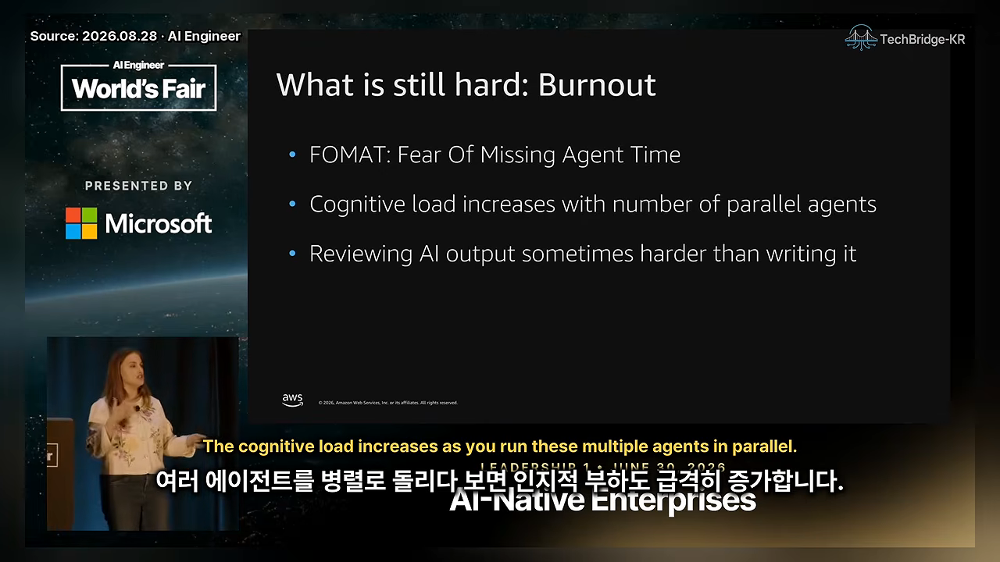
둘째 줄은 인지 부하예요. 에이전트를 여러 개 나란히 돌리면 터미널 탭을 끝없이 오가야 해요. 셋째 줄은 리뷰 부담이에요. 시니어는 이미 남의 코드를 오래 리뷰해 왔지만, 주니어는 그 근육이 아직 없어요. 그래서 AI가 쓴 코드를 검토하는 일이 직접 쓰는 것보다 더 힘들게 느껴질 수 있어요.
조직의 변화
엔지니어 한 명이 일하는 방식을 바꾸는 것도 어렵지만, 조직도 함께 바뀌어야 해요. 슬라이드에 세 가지가 있어요.
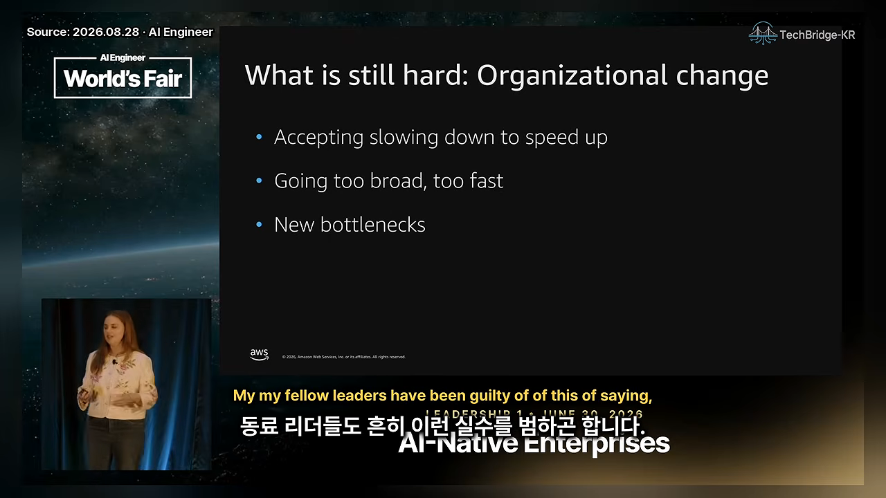
- 느려지는 기간을 받아들이기. 발표자 자신과 동료 리더들도 "이제 AI도 있고 모델도 좋은데 왜 더 빨라지지 않죠?"라고 물은 적이 있대요. 코드베이스에 투자하고, 팀에 맞는 방법을 찾고, 습관을 바꾸는 데 두 달 정도가 필요해요. 하루 PR(Pull Request) 20개를 낸다는 다른 회사들의 이야기에 휩쓸리지 말아야 해요.
- 너무 넓게, 너무 빨리 퍼뜨리지 않기. 처음부터 모든 팀에 프런티어 팀이 되라고 했다면 패스파인더, 스프린트, 파일럿에서 얻은 배움이 없었을 거예요. 아마존의 2026년 과제는 50개 팀을 다음 2,000개 팀으로 넓히는 거예요. 너무 빨리 넓히면 조직에 맞는 방법과 컨텍스트를 찾기 전에 팀들이 길을 잃어요.
- 새 병목이 생겨요. 아래에서 따로 볼게요.
새 병목은 의사결정 속도예요
예전에는 코드를 손으로 쓰는 게 병목이었어요. 새 제품을 만드는 데 9~12개월이 걸릴 때는, 만들지 정하는 데 2개월, 출시 승인에 2개월이 걸려도 별로 티가 안 났어요. 그런데 코드가 1~2개월이면 끝나자 이 두 구간이 가장 긴 막대가 됐어요. 발표자가 말한 숫자를 같은 눈금으로 그리면 이래요.
발표자는 프런티어 팀이 코드를 쓰는 시간보다 결정하는 시간이 더 길다고 봐요. 그래서 빠르게 결정할수록 좋고, 특히 되돌리기 쉬운 결정은 오래 끌 이유가 없다고 해요.
하나만 기억한다면
마지막 슬라이드가 강연 전체를 한 줄로 묶어요. '일하는 방식을 의도적으로 바꾸세요.' 어렵고 시간이 들며, 새 습관을 만드는 일이에요. 엔지니어 팀만이 아니라 조직 전체에 해당하는 이야기이기도 해요.
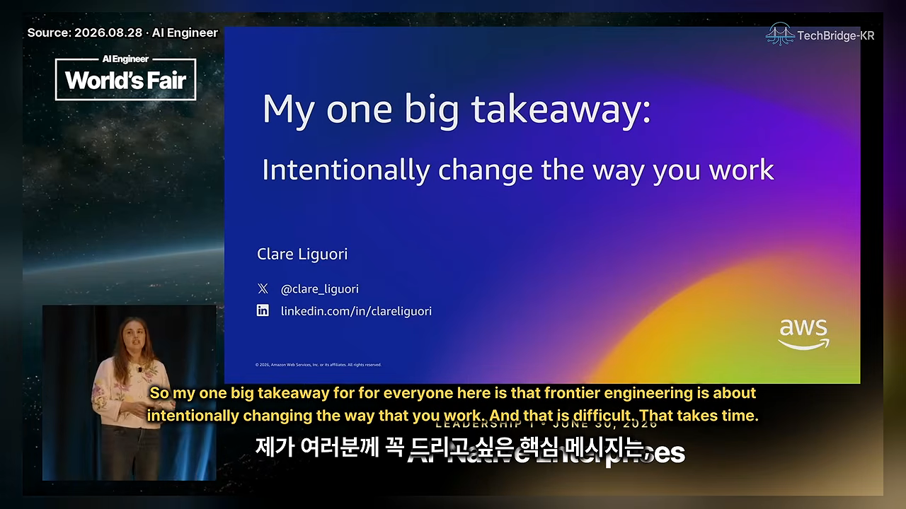